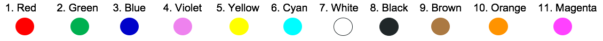

Registration: Via your Google login, Bennit authenticates you as an unique user and gets access to basic details such as your name and family name if specified. Registration involves providing basic information such as:
where you work, your role at work, the business division or area that your work in, your main area of expertise, your interests or activities that you like, your favorite color,
and any goal that you would like to capture for progress tracking purposes.
Keywords to change user details: change, modify, update, change user details, etc.
Keywords to exit registration and other conversation flows: cancel, done, stop, exit, interrupt, etc.
Colors:

Interests and Activities examples:
- Health: Yoga, Meditation, Exercising and body building, Participating in marathons, Jumping rope, Swimming, Martial arts, Fitness counseling, Recipe creation
- Sports & Adventure: Scuba diving, River rafting, Bungee jumping, Skiing, Trekking, Ice skating, Surfing, Racing, Gymnastics, Hunting
- Outdoor: Fishing, Archery, Boating, Traveling, Camping, Kayaking, Kart racing, Golfing, Swimming, Skateboarding
- Indoor: Playing cards, Tarot card reading, Playing board games, Watching movies, Cubing, Bowling, Billiards, Ping pong/table tennis, Pottery
- Lifestyle: Wine tasting, Shopping for latest trends, Food critic, Pet training and grooming, Collecting vintage items, Hosting parties, Collecting precious gems, Traveling and exploration
- Creative: Cook foods in disguise, Painting, Graffiti art, Creative writing, Dancing/choreography, Singing/composing music, Sculpting, Model building, Interior decorating, Jewelry-making
- Computers & Technology: Computer games, Video gaming, Social networking, Keeping virtual pets, Creating software, Internet browsing, Blogging, Building computers and robots
- Nature: Recycling, Organic farming, Composting, Landscape gardening, Hydroponic gardening, Making birdfeeders/birdhouses, Creating art from used material, Making recycled paper, Animal care
- Collection: Collecting seashells, stamps, fossils and rocks, dried flowers, butterflies, comic books, coins, photographs of people you meet, bird feathers, visiting/greeting card
- Observational: Birdwatching, Geocaching, Photography, Cloud watching, Stargazing, People watching, Herping, Amateur meteorology, Reading
Start-of-Day
Keywords: start, starting, start shift, another day, new day, etc.
Questions:
Anything major planned for the day?
Anything that might impact production today?
How are you feeling today? (1) Good / Excellent (2) Bad (3) Stressed (4) Motivated (5) Other
Leaving / End-of-Day
Keywords: leaving, go, going home, goodbye, bye, signing off, etc.
Questions:
Please rate the following on a scale from 1 (very poor) - 2 (poor) - 3 (ok) - 4 (good) - 5 (excellent):
- Happiness at work today
- Production performance/ quality today
- Collaboration experience at work today
- Productivity at work today
- Safety at work today
- Risk at work today
Any Issues today?
Any Positives that you want to highlight?
What progress have you made towards your goal?
Safety
Keywords: danger, emergency, near miss, need assistance, safety, risk, crisis, etc.
Questions:
Is something wrong?
Do you need help?
Please describe the safety issue.
Are there any additional information that should be recorded (e.g., video, last 2 minutes of audio, etc.)?
Other Events
Keywords: event, capture event, occasion, record event, situation, ceremony, celebration, etc.
Questions:
What special event do you like to capture today?
Ideas
Keywords: idea, contribute, suggestion, advice, improve, inputs, improvement, etc.
Questions:
Ideas on how Bennit can help you save time at work?
(1)
Productivity: How can Bennit help you to become more productive?
(2)
Safety: How can Bennit help improve safety at work?
(3)
Performance/Quality: How can Bennit help with improving performance and quality KPIs?
(4)
Advice: What type of advice would help you at work?
(5)
Knowledge: hat knowledge topics are your interested in?
(6)
Risk: How can Bennit help to reduce risk at work?
(7)
Other: Ideas on how Bennit can help you at work?
Feedback and recommendations
Keywords: feedback, assessment, evaluate, comment, observation, observe, react, recommendation, etc.
Questions:
App experience: Feedback and recommendations with respect to current Bennit functionality
(1) Please rate your Bennit app experience on a scale from 1 (very poor) - 2 (poor) - 3 (ok) - 4 (good) - 5 (excellent)
(2) What do you like the most?
(3) What do you like the least?
(4) What feedback and recommendations do you have that would help to improve the Bennit experience?
Keywords: report, reports, show, etc.
Reports:
- Registration / Introduction Report: Keywords: registration, intro, introduction, onboarding, etc.
- Start-of-Day Report: Keywords: Start-of-Day, start, etc.
- End-of-Day Report: Keywords: Leaving, End-of-Day, end day, etc.
- Safety Report: Keywords: Safety, near miss, etc.
- Contribution Report: Keywords: contribution, feedback, idea, recommendations, etc.
- Scoring Report: Keywords: Score, scoring, game status, etc.
- Survey / Discovery Report: Keywords: survey, discovery, etc.
- Equipment Report: Keywords: equipment, machines, performance, etc.
- Insights Report: Keywords: Insight, analysis : Not currently available: Focus on analysis, insights, app usage, physical location of usage, engagement, etc.
Keywords: score, achieve, count, game score, game status, grade, tally, etc.
Bennit Score: Your current score to measure your Bennit interaction, use and contributions
Scoring System: The Bennit scoring system currently rewards application usage, interactions and contributions:
- User details : Keep user details up-to-date: +2 points
- Work-life diary:
Start-the-day: +5 points every day
Leaving: +10 points every day
- Contribute:
Ideas: +5 points
Feedback: +5 points
- Safety: Capture incident: +5 points
- Events: Capture special event: +5 points
- Reports: View reports: +3 points
Keywords for other Intents:
- Change: change, modify, update, change user details, etc.
- Learn: learn, domain expertise, information, knowledge, learning, new, etc.
- Discovery / Survey: discovery, survey, etc.
- Register (to register a machine or a sensor tag device): register, device, link, identify, etc.
- Greetings: greeting, hi, hello, howdy, etc.
- Thanks: thanks, acknowledgement, credit, like, nice, great, gratitude, etc.
- Curse: a variety of curse words
- Funny: funny, ha, ha ha, smile, etc.
- Dumb: dumb, stupid, naive, negative, etc.
- Recommendation: help me, what can you do for me, advice, etc.
- Schedule: schedule, arrange meeting, please book, etc. (N/A)
- Phone: call, phone, answer, make a call, etc. (N/A)
- Weather: check the weather, tell me the weather, etc. (N/A)